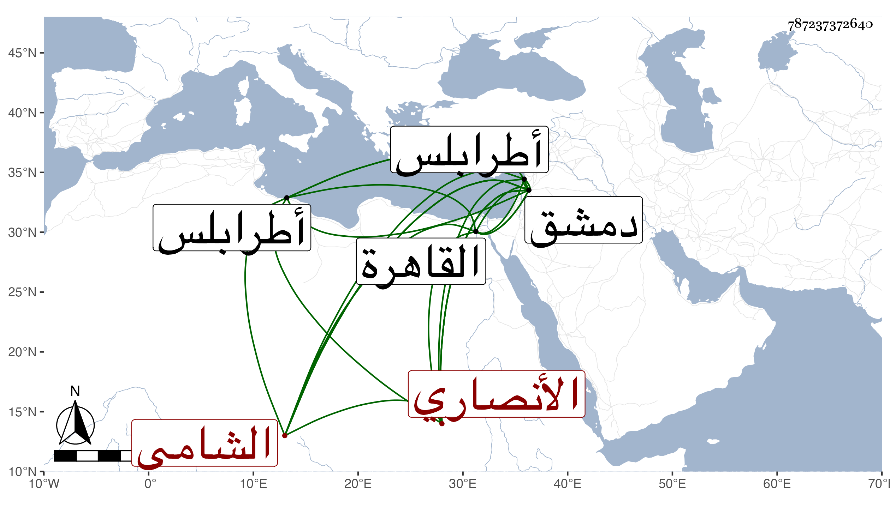

0902Sakhawi.DawLamic.ITO20230111-ara1.EIS1600.787237372640
Biography ID: 787237372640
604
محمد بن علي الشمس أبو شامة الأنصاري فيما كان يزعم الشامي . ولي أمانة الحكم بدمشق ثم ناب في الحكم بالقاهرة وكان كثير السكون مع إقدام وجرأة ، وقد خمل في أواخر دولة الأشرف برسباي وتغيب مدة ثم ظهر في دولة الظاهر وولي وكالة بيت المال بدمشق وقبل ذلك ولي قضاء طرابلس وكتابة سرها ، ومات بدمشق في ثاني عشر جمادى الأولى سنة خمس وأربعين ودفن بمقبرة باب الفرادسي . ذكره شيخنا في إنبائه وسيأتي محمد بن محمد بن يوسف بن إبرهيم بن أيوب أبو شامة الدمشقي الشافعي وأجوز أنه هو حصل السهو في تسمية أبيه عليا ويحتمل التعدد .
